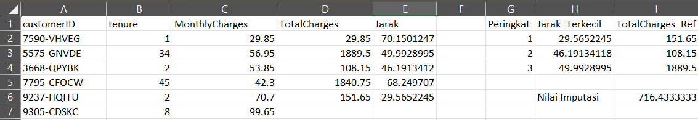

Simulasi k-NN Imputasi pada Data Numerik (Telco Churn)#
Untuk membuktikan bagaimana algoritma k-NN mengisi kekosongan data (missing value), kita mengambil 6 baris berurutan paling atas dari dataset asli Kaggle: Telco Customer Churn yang sudah kita simpan dalam file missing.csv.
Kita menyimulasikan skenario di mana nilai TotalCharges (Total Tagihan) pada pelanggan ke-6 hilang (sebagai Target). Kita akan mencari estimasi nilainya dengan menghitung kedekatannya terhadap 5 pelanggan di atasnya (sebagai Referensi).
1. Data Asli & Skenario Missing Value#
Berdasarkan tabel dari dataset asli, nilai TotalCharges pada pelanggan ke-6 (ID: 9305-CDSKC) sengaja kita hilangkan (NaN) untuk diuji. Nilai aslinya sebelum dihilangkan adalah 820.50.
customerID |
tenure |
MonthlyCharges |
TotalCharges |
|---|---|---|---|
7590-VHVEG (Ref) |
1 |
29.85 |
29.85 |
5575-GNVDE (Ref) |
34 |
56.95 |
1889.50 |
3668-QPYBK (Ref) |
2 |
53.85 |
108.15 |
7795-CFOCW (Ref) |
45 |
42.30 |
1840.75 |
9237-HQITU (Ref) |
2 |
70.70 |
151.65 |
9305-CDSKC (Target) |
8 |
99.65 |
|
2. Perhitungan Jarak ke Populasi Referensi#
Kita menghitung metrik jarak (Euclidean Distance) dari target ke 5 referensi menggunakan fitur durasi kontrak (tenure) dan tagihan bulanan (MonthlyCharges).
Rumus: $\(d = \sqrt{(Tenure_{target} - Tenure_{ref})^2 + (Monthly_{target} - Monthly_{ref})^2}\)$
Jarak ke 7590-VHVEG \((1,\ 29.85)\): $\(d_1 = \sqrt{(8 - 1)^2 + (99.65 - 29.85)^2} = \sqrt{49 + 4872.04} \approx \mathbf{70.15}\)$
Jarak ke 5575-GNVDE \((34,\ 56.95)\): $\(d_2 = \sqrt{(8 - 34)^2 + (99.65 - 56.95)^2} = \sqrt{676 + 1823.29} \approx \mathbf{49.99}\)$
Jarak ke 3668-QPYBK \((2,\ 53.85)\): $\(d_3 = \sqrt{(8 - 2)^2 + (99.65 - 53.85)^2} = \sqrt{36 + 2097.64} \approx \mathbf{46.19}\)$
Jarak ke 7795-CFOCW \((45,\ 42.30)\): $\(d_4 = \sqrt{(8 - 45)^2 + (99.65 - 42.30)^2} = \sqrt{1369 + 3289.02} \approx \mathbf{68.25}\)$
Jarak ke 9237-HQITU \((2,\ 70.70)\): $\(d_5 = \sqrt{(8 - 2)^2 + (99.65 - 70.70)^2} = \sqrt{36 + 838.10} \approx \mathbf{29.56}\)$
(Tahap cross-validation perhitungan jarak Euclidean ini telah divalidasi menggunakan fungsi komputasi otomatis pada Microsoft Excel).

3. Pemilihan Tetangga Terdekat (\(k=3\)) & Imputasi#
Setelah menghitung jarak, algoritma menyortir 3 pelanggan dengan jarak terdekat (paling mirip profil tagihannya), yaitu:
Peringkat 1: 9237-HQITU (Jarak = 29.56) \(\rightarrow\)
TotalCharges= 151.65Peringkat 2: 3668-QPYBK (Jarak = 46.19) \(\rightarrow\)
TotalCharges= 108.15Peringkat 3: 5575-GNVDE (Jarak = 49.99) \(\rightarrow\)
TotalCharges= 1889.50
Menghitung Nilai Estimasi (Mean): $\(Nilai\_Imputasi = \frac{151.65 + 108.15 + 1889.50}{3}\)\( \)\(Nilai\_Imputasi = \frac{2149.3}{3} = \mathbf{716.43}\)$
Kesimpulan Evaluasi:#
Melalui metode k-NN Imputation (\(k=3\)), nilai TotalCharges yang hilang berhasil diestimasi menjadi 716.43. Angka ini cukup logis dan mendekati nilai aslinya yaitu 820.50. Selisih yang terjadi sangat wajar dalam dunia Machine Learning karena data di dunia nyata memiliki variasi yang dinamis, namun k-NN tetap berhasil memberikan rentang tebakan yang rasional berdasarkan pola data terdekatnya.